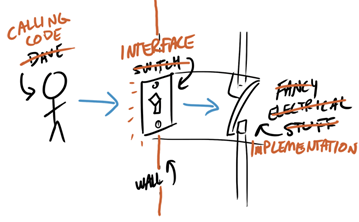

The Wall of Abstraction
A class is an interface paired with an implementation, similar to the Time structure you created in the lesson on Information Hiding. This is called the wall of abstraction, illustrated by the comic below.

The public interface specifies how clients interact with objects, and the private implementation specifies how the functions in the public interface are implemented.
The Time struct (even when paired with an interface, so the data is hidden), still allows users to directly manipulate its data members. Classes take a different approach; with classes, the data inside your objects will only be accessible by the member functions, forcing the client to access and modify data in a safe way.
 This course content is offered under a
CC
Attribution Non-Commercial license. Content in this course
can be considered under this license unless otherwise noted.
This course content is offered under a
CC
Attribution Non-Commercial license. Content in this course
can be considered under this license unless otherwise noted.